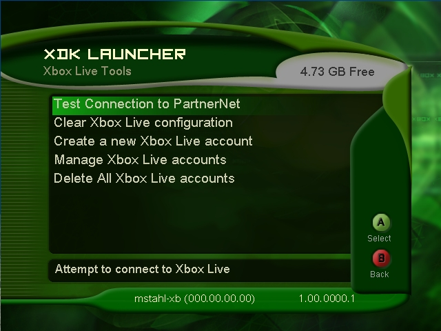

Xbox Live Tools
You can adjust Xbox Live tools by selecting Xbox Live Tools in the XDK Launcher Settings and Tools menu.

Illustration An image of the Xbox Live Tools screen.
The following utilities are available on the Xbox Live Tools menu:
- Test Connection to PartnerNet — Attempts to connect the Xbox to the Xbox Live service. A message of success or failure is then displayed. In addition to the success message, QOS (Quality Of Service) information is displayed. That information includes:
- Number of test packets sent.
- Minimum round-trip time for those packets, in milliseconds.
- Median round-trip time for those packets, in milliseconds.
- Average bandwidth (down) to the Xbox from PartnerNet, in kilobits per second.
- Average bandwidth (up) from the Xbox to PartnerNet, in kilobits per second.
- Clear Xbox Live configuration — Clears tickets, caches, purchases, and any additional information associated with the Xbox Live configuration of the Xbox. This is useful in testing enumerating and purchasing/downloading content packages repeatedly on the same Xbox.
- Create a new Xbox Live account — Provides a keypad for entering a gamertag for a new Xbox Live account. Once the gamertag has been entered, the user may enter the pass code and region for the new account. Up to 8 accounts may be created per Xbox hard disk, and 1 account per memory unit (MU).
Note The user is not required to enter a pass code. The user may choose to leave the pass code blank by pressing the A button to skip the pass code screen. If the user accidentally enters one or more of the four possible components of the pass code, the user may press in the left thumbstick to clear the pass code.
- Manage Xbox Live accounts — Allows the user to copy, delete, and modify the state of Xbox Live user accounts on the Xbox. The SetStates option allows you to put the Xbox Live account in various error states to help test the game:
- Lockout account: Invalidates the local account credentials. The user account still exists on the service and the account is still allowed to log on, but all local copies on all Xbox systems are invalidated. Use the Xbox Dashboard's account recovery feature to create a valid local set of credentials again.
- Read TOS (terms of service): Flags the account as being required to read the terms of service the next time the user logs in. Games must honor this setting by booting to the dashboard.
- New Gamertag: Flags the account as being required to change its gamertag the next time the user logs in. Games must honor this setting by booting to the dashboard.
- Nickname banned: Flags the account as not being allowed to use the nickname feature. If your game uses nicknames (usernames other than the gamertag), then it must honor this setting.
- Suspended: Accounts cannot log on while suspended. You can be suspended for 1 day, 1 week, 2 weeks, or indefinitely. You can un-suspend the account by setting the suspension period to 0 days, or you can simply wait until the account is not suspended anymore. Games must honor this setting by preventing online play.
- Voice banned: If an account is voice banned, games must not allow the user to use voice during gameplay. Same allowed periods as Suspended.
- Delete All Xbox Live accounts — Erases all Xbox Live accounts on the hard disk and on all attached MUs. Accounts that are deleted are not removed from the server until the subsequent XDK release. So a new account cannot be created using an existing gamertag until the account with that gamertag has been removed from the server.
See Also
XDK Launcher